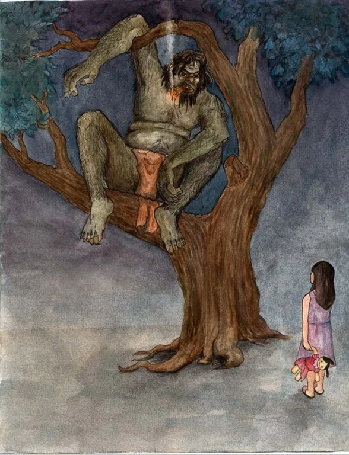

The Kapre is a mysterious, towering creature who hides in large trees. Often seen at night smoking a glowing cigar, he is known to scare wanderers but also protect the forest. Stories say if you are respectful, the Kapre may leave you alone—but if you disturb him, you may never return.
Explore the tales of this eerie forest guardian and uncover the secrets hidden in the dark woods.
Enter The Tale